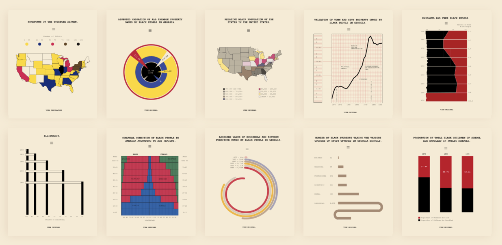
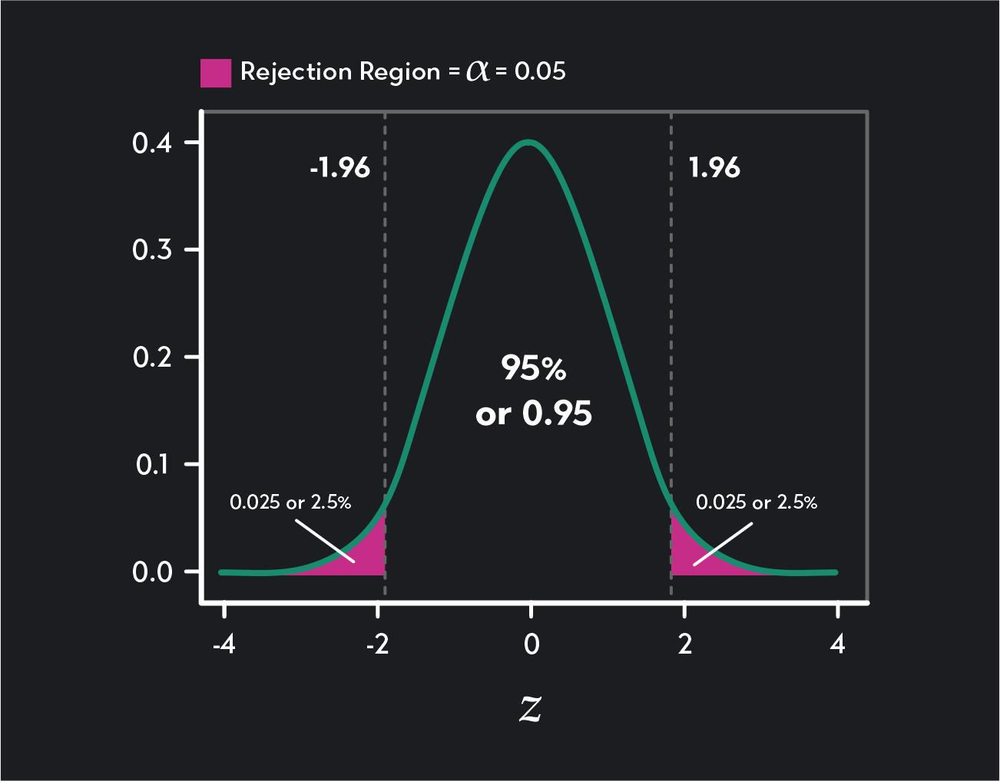
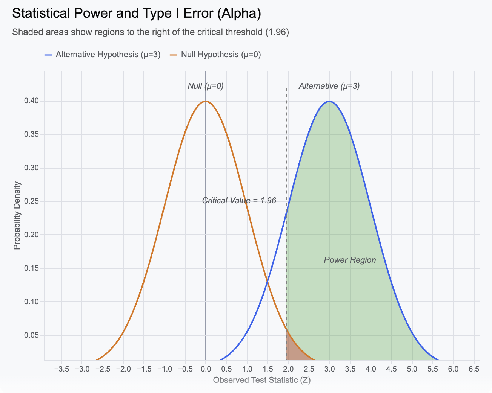
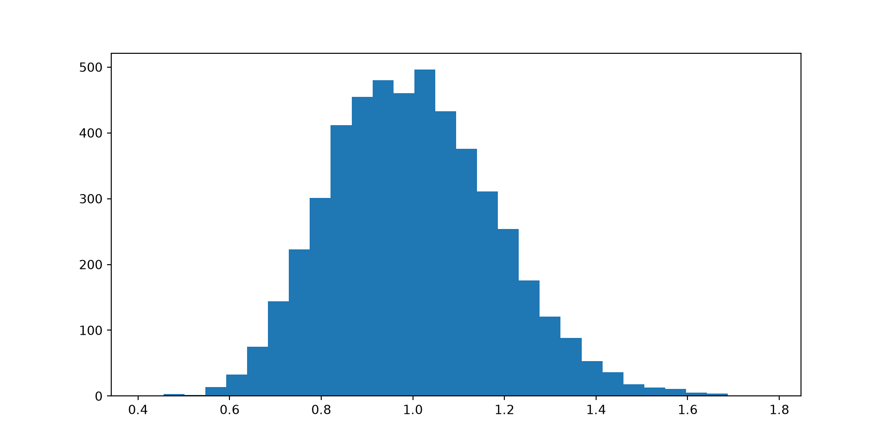
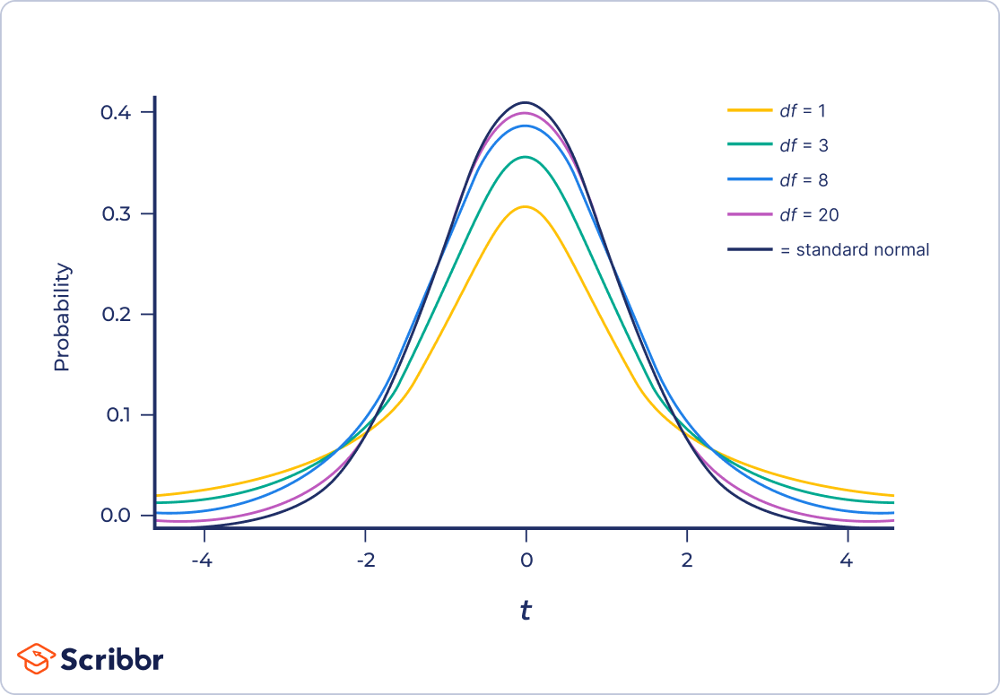

[1] 0.6336178Inference, hypothesis tests, p-values, sampling distributions, and power
2026-09-25
Statistics Refresher
Project sample knowledge on to a population
A practical review of the logic behind inferential statistics.

W.E.B. Du Bois Portrait Gallery:
Visualizing Black America
In statistics, often we are interested in studying phenomena that affect large groups of subjects. Usually, we do not observe every person, school, patient, or event we care about. The population of an experiment refers to all possible relevant data for the question we care about.
Instead we collect our experimental observations from a smaller group of subject. That is the premise of most statistical experiments – the data we actually have
\[ \text{sample} \longrightarrow \text{evidence} \longrightarrow \text{population} \]
The goal of inferential statistics is to use one or more sample statistics to infer what is happening in a larger population of interest.
Population
what we want to know about
↓
Sample
what we observe
Note
A population can be all patients seen by a clinic, all Tennessee school districts, all customers in a market, or all units produced by a process. It does not have to mean “all humans.”
A parameter summarizes a population.
A statistic summarizes a sample.
| Population | Sample | |
|---|---|---|
| Mean | \(\mu\) | \(\bar{x}\) |
| Proportion | \(p\) | \(\hat{p}\) |
| Correlation | \(\rho\) | \(r\) |
The statistic is observable. The parameter is usually what we want to know.
Tip
Inference: use the statistic we can calculate to learn about the parameter we care about.
Suppose we want to know whether patients wait longer in Cardiology than in Primary Care.
Population: all relevant patients in the population of interest.
Sample: the patients represented in our dataset.
Sample statistic: the observed difference in mean waiting times for the two departments.
Population parameter: the corresponding difference in mean waiting times for the population.
Inferential question: Is the difference we observed in the sample large enough to support a population-level claim?
Suppose our sample gives: \[\bar{x}_{\text{PC}}-\bar{x}_{\text{Cardio}}=8\text{ minutes}\]
There are at least two explanations:
Inferential statistics gives us a framework for distinguishing these possibilities.
Hypotheses
Statistical hypotheses are statements about the population. The sample’s role is to provide evidence in that regard.
Null hypothesis (\(H_0\))
Nothing distinctive is going on in the population, no difference.
Alternative hypothesis (\(H_A\))
The phenomenon we are observing has credence within the population; a population difference exists.
For a difference in means: \[H_0:\mu_1-\mu_2=0\] \[H_A:\mu_1-\mu_2\neq0\]
When beginning an experiment, do not assume that the phenomenon you are trying to establish is present. Therefore, think of the null hypothesis as a status quo: a reference point describing what we would expect to observe if there were no effect.
The question we typically frame in inferential statistics is:
If \(H_0\) were true, how surprising would our observed result be?
Hypothesis Testing is not:
“Prove that \(H_0\) is false.”
Instead:
“Assume \(H_0\) and see whether the data are unusually inconsistent with it.”
Warning
We generally say “fail to reject the null”, not “accept the null”. A non-significant result does not prove that the null hypothesis is true. It simply indicates lack of sufficient evidence to the contrary.
p-values: First Intuitions
To quantify the extremeness of our observed results under the status quo assumption, we use \(p\)-values.
The null hypothesis says:
There is no difference in the population waiting time means.
Now imagine repeatedly taking samples when this is indeed true.
Most sample differences will be relatively small. Some will be larger just because of sampling variation.
The \(p\)-value then asks:
How often would we see a result at least as extreme as the 8 minute difference we observed if the null hypothesis were true?
Larger \(p\)-values indicate less surprise: \[p=0.20\]
A result this extreme is not especially unusual under the null model.
Smaller \(p\)-values indicate higher amount of surprise:
\[p=0.003\]
A result this extreme would be very unusual under the null model.
Note
Smaller p-values -> greater incompatibility between the observed result and the null model.
The \(p\)-value is the probability of obtaining a test statistic as extreme or more extreme than the observed (test) statistic, given the null hypothesis is true.
\[p=P(\text{test statistic at least as extreme as observed}\mid H_0\text{ true})\]
Calculating the \(p\) value
Things to remember
Test Statistic: a random variable whose value can change from sample to sample. Under \(H_0\) it follows a known distribution.
Observed Test Statistic: the specific value of that random variable calculated from the sample we actually observed.
So, the 8-minute difference tells us what we observed; the test statistic tells us how extreme that difference is relative to its expected sampling variation.
Smaller \(p\)-values help to reject the null hypothesis. But how small is small enough? \(\rightarrow\) Set a significance threshold!
The significance level is the probability of rejecting the null hypothesis when the null hypothesis is actually true: \[\alpha = P(\text{reject }H_0 \mid H_0\text{ is true})\] Choosing \(\alpha = 0.05\) means that, if the null hypothesis were true, we accept a 5% long-run probability of incorrectly rejecting it upon repeated sampling.

Note that we deliberately set aside the most extreme \(5\%\) of results within the null distribution to trigger the rejection of \(H_0\).
Since the \(p\)-value tells us how unusual our observed result is under the null hypothesis, it naturally follows that:
\[ p < \alpha \quad\Rightarrow\quad \text{reject }H_0 \] \[ p \geq \alpha \quad\Rightarrow\quad \text{fail to reject }H_0 \]
\(\alpha <->\) \(p\)-value
\(\alpha\) highlights the threshold for how unusual must a result be to reject \(H_0\).
\(p\)-value tells us how unusual our observed result actually is under \(H_0\).
\(p < \alpha \implies\) The probability of obtaining our observed result or something more extreme under \(H_0\) is smaller than the probability threshold we decided was sufficiently unusual to reject \(H_0\).
Comparing \(p\) with \(\alpha\) simply asks:
Is our observed statistic far enough into the tail to lie inside the rejection region whose false-positive probability we limited to \(\alpha\)?
how likely the result is to replicate.
A small \(p\)-value does not mean that a similar result is guaranteed in another sample.
how large or important the effect is.
Statistical significance and practical importance are different questions.
how much evidence exists for the alternative hypothesis.
Small \(p\)-value means stronger evidence against \(H_0\), not the probability of \(H_A\) being true.
whether the result is surprising because the effect is large.
A result can be statistically significant because the estimate is precise, even when the effect itself is very small.
whether the study had enough power.
A non-significant result may reflect a genuinely small effect, substantial variability, or insufficient sample size.
A p-value answers one specific question
How unusual would a result at least this extreme be if the null hypothesis were true?
It does not answer whether the effect is large, important, replicable, or true.
Effect size, significance, and power
A p-value helps us determine whether an effect observed in a sample can be used to draw an inference about a similar effect in the population.
An effect size asks:
How large or strong is the phenomenon we are considering?
These are different questions.
A result can be statistically significant but practically trivial
The Physicians Health Study of Aspirin : Researchers studied a sample of 22,000 subjects over 5 years, separated into a placebo group and an effect group. The hypothesis that taking aspirin everyday can reduce the risk of heart attack was found to be “highly statistically” significant, \(p < .00001\) (less than 1 in 100,000 by random chance).
However, the effect size, measured using \(R^2\) (measures the percentage of variance in risk explained by taking aspirin) was incredibly small. Most people did not experience the benefits of aspirin. In fact, risk of side effects nearly outweighed the “positive” preventative effect of taking aspirin.
When effect size is small, the pros of a treatment might not outweigh the cons.
Suppose a new patient check-in system reduces average waiting time by only \(0.2\) minutes.
With a large sample, even this small effect can produce a very small \(p\)-value. That does not make the reduction practically important.
On the other hand, suppose a small study finds: \(10\text{-minute reduction; } p = 0.08\)
The observed effect could be practically important, even though it does not meet the conventional \(\alpha = 0.05\) significance threshold.
Why?
We use standard error to standardize the sample statistic, producing an observed test statistic that tells us how large the observed result is relative to its expected sampling variation. (More on this calculation later!)
Standard error is inversely proportional to sample size: \(\text{SE for sample mean} = \frac{s}{\sqrt{n}}\)
A smaller standard error could make an observed difference of a given size more extreme relative to its expected sampling variation, which can produce a smaller \(p\)-value.
Statistical significance does not tell us whether an effect is practically important.
Always consider the size of the effect, not only its \(p\)-value. For the same effect size (observed difference):
| Small study | Large study | |
|---|---|---|
| Standard error | large | small |
| Test statistic | smaller | larger |
| \(p\)-value | larger | potentially very small |
I like to think of statistical power as the true positive rate of a hypothesis test.
It asks: If a real effect exists, how likely is our study to detect it?
Formally, \(P(\text{reject }H_0\mid H_0\text{ is false})\)
Power is affected by:
Effect size
Sample size
Variability
Significance level \(\alpha\)
Larger samples and larger effects generally make it easier to detect a real effect.
Three concepts matter together
By relying on \(p\)-values alone we cannot differentiate whether a test failed to reject \(H_0\) because the observed data was indeed consistent with it or because the size of the study was too small. Looking at power helps us recognize the latter.
\[ \boxed{ \text{$p$-value: evidence} \qquad \text{effect size: magnitude} \qquad \text{power: sensitivity} } \]
Why sample size (\(n\)) matters
For a fixed effect size:
\[ n\uparrow \quad\Rightarrow\quad SE\downarrow \quad\Rightarrow\quad |z|\text{ or }|t|\uparrow \quad\Rightarrow\quad \text{power}\uparrow \]
So although larger samples make smaller effects precise and easier to detect, they can also make them appear statistically significant.
Because calculating power involves complex calculus (finding area under a non-central probability distribution) we will use statistical packages
A Coding Demo
Suppose a new patient check-in system is introduced in the outpatient clinic. The null hypothesis is \(H_0:\mu=30\text{ minutes}\) but this intervention brings the waiting time down to 28 minutes.
Before collecting the data, we want to know:
If the population mean after the intervention really is 28 minutes, how often would our study detect that departure from the null mean of 30 minutes?
This probability is the statistical power of the study. To calculate it, we need to specify:
What do we intend to calculate here?
The difference we want to detect is: \(\mu_1-\mu_0=28-30=-2\text{ minutes}\).
More specifically we want to compute, if the population mean really is 28 minutes, how likely is a sample of 100 patients to give us enough evidence to reject \(H_0\) at \(\alpha=0.05\)?
Function params to note
d/effect_size standardizes the effect size in standard deviations: \(d = \frac{\mu_1-\mu_0}{\sigma}\)type = one.sample: tells pwr.t.test() that this is a one-sample t-test. In our example, we have one sample of patients after the new system, compared against a fixed reference mean of 30 minutes.alternative = less/alternative = smaller: specifies the direction of the alternative hypothesis. Our research question is whether the new system reduces waiting time and hence the relevant effect will be in the left tail of the distribution.What happens when we increase our sample size?
For the same effect size, increasing the sample size makes the estimates more precise and increases the probability of detecting the effect. \[\text{Power} \propto \frac{\text{Effect Size} \times \sqrt{\text{Sample Size}}}{\text{Significance Level } (\alpha)}\]
Sample size: 25 | Power: 0.25
Sample size: 100 | Power: 0.634
Sample size: 400 | Power: 0.991 Sample Size: 25 Statistical Power: 0.25
Sample Size: 100 Statistical Power: 0.634
Sample Size: 400 Statistical Power: 0.991| Reality | Decision | Error |
|---|---|---|
| \(H_0\) true (no effect) | Reject \(H_0\) | Type I error or False Positive |
| \(H_0\) false (effect exists) | Fail to reject \(H_0\) | Type II error or False Negative |
Think of two distributions: the null (where \(H_0\) true) and an alternative (where \(H_A\) is specified).
Type I error rate is tied to the significance level. It is area of the null distribution inside the rejection region. \(\alpha=P(\text{reject }H_0\mid H_0\text{ true})\)
Type II error rate (\(\beta\)) is controlled by Statistical Power. It is the area of the alternative distribution inside that same rejection region. \(\beta=1-\text{Power}\)

The rejection cutoff is determined using the null distribution, whereas power is the probability of landing in that same rejection region under the alternative distribution.
How do we find these \(p\)-values?
We know that a \(p\)-value tells us how likely would we be to obtain a result at least as extreme as the one we observed if the null hypothesis were true.
To calculate that probability, we need to know:
What results would be expected if the null hypothesis were true?
Imagine repeating the sampling process many times while the null hypothesis remains true. Each sample would produce a somewhat different sample statistic —for example, a different mean waiting time for each sample we study.
The distribution of these possible sample statistics is the sampling distribution.
This gives us the reference distribution we need to determine how extreme our observed result is and ultimately calculate its \(p\)-value.
The Central Limit Theorem
For many experimental settings, as your sample size grows, the distribution of the sample mean becomes approximately normal even for non-normal population distributions.
\[\bar{X}\approx N\left(\mu,\frac{\sigma^2}{n}\right);\]
In other words, upon standardization \(\frac{\bar{X}-\mu}{\frac{\sigma}{\sqrt{n}}} \approx N\left(0,1\right)\)
The exact assumptions matter, but the core idea remains valid:
The reference distribution lets us ask:
How far into the tails does our observed test statistic fall?
Tip
Since many inferential questions concern sample means not necessarily for the raw data themselves, we see the normal curve quite often thnaks to the guarantees of the CLT.
We start with a strongly right-skewed population, repeatedly draw samples of \(n=30\), and calculate the mean of each sample. The histogram shows the sampling distribution of the 5,000 sample means.
# Generate a right-skewed population
population = np.random.exponential(size=100000)
# Take 5,000 samples of size 30
# and calculate each sample mean
sample_means = [
np.mean(np.random.choice(population, 30))
for _ in range(5000)
]
# Sampling distribution of the mean
plt.hist(sample_means,bins=30)
plt.show()
\(z\) and \(t\) statistics
Standardization maps your sample statistic onto a unit-less scale.
In general, the test statistic tells us how far an observed sample statistic is from the value expected by \(H_0\) in terms of standard errors, relative to its expected sampling variation.
\[ \text{test statistic} = \frac{ \text{observed sample statistic} - \text{value specified by }H_0 }{ \text{standard error} } \]
When the statistic of interest is the sample mean and the population standard deviation \(\sigma\) is known:
\[ z = \frac{\bar{x}-\mu_0} {\sigma/\sqrt{n}} \]
Interpretation: How many standard errors is the observed sample mean from the mean specified by the null hypothesis?
Under \(H_0\), \(z\) follows a standard normal distribution when the relevant assumptions are satisfied.
Note
The denominator here is specific to the sample mean.
\(\sigma/\sqrt{n}\) is the standard error of the sample mean. In general, the formula for a standard error depends on the sample statistic being studied.
Usually we do not know the population standard deviation (\(\sigma\)). We estimate it from the sample (\(s\)). Then:
\[t=\frac{\bar{x}-\mu_0}{s/\sqrt{n}}\]
Because the standard deviation is estimated, there is additional uncertainty.
Our reference distribution therefore becomes the Student’s t distribution.
For a one-sample mean test: \(df=n-1\)

Tip
Smaller \(df\) → more probability in the tails → extreme \(t\)-values are less unusual.
For example, if we observe \(\lvert t \rvert =2\), with a standard normal reference distribution, values beyond approximately \(\pm 2\) are relatively rare. With a low-df \(t\) distribution, values that far from zero are more common because more probability lies in the tails. So the same observed test statistic is less compelling evidence against \(H_0\) when degrees of freedom are small, giving way to a ‘more cautious’ reference distribution.
| z statistic | t statistic | |
|---|---|---|
| Population SD | known | unknown / estimated |
| Data distribution | Must be Normally distributed (or sample must be large enough for the CLT to apply) | Must be Normally distributed (critical for small samples) |
| Reference distribution | standard normal | Student’s t |
| Degrees of freedom | no | yes |
| Small samples | possible when assumptions are met | especially important |
| Large samples | normal reference | t becomes close to normal |
Note
Do not memorize a universal rule such as “n > 30 means use the z-test.” The deeper distinction is (under the assumptions of the test):
A standard \(z\)-table gives the area to the left of a given \(z\)-score. To find a value:
Example: For \(z=1.65\) look up row: \(1.6\), and, column: \(0.05\). The table gives: \(P(Z\le1.65)\approx0.9505\). So about 95.05% of the standard normal distribution lies to the left of \(z=1.65\).
One-tailed test (\(\alpha=0.05\)): Only the tail in the direction of the alternative hypothesis is looked into. So you look for an area of \(0.95\) or \(0.05\), depending on which tail. Looking into the table the closest to our target \(\alpha\) is \(0.04947\). This area is at the row and column intersection for the z-value of \(-1.65\). That’s our critical value! Technically our \(\alpha\) falls between the z-values of \(-1.64\) and \(-1.65\) but let’s go with the marginally more conservative critical z-value of \(-1.65\).
Two-tailed test (\(\alpha=0.05\)): Because the rejection region is split between two tails, first divide the significance level by 2: \(\frac{\alpha}{2} = \frac{0.05}{2} = 0.025\). So each tail contains 2.5% of the null distribution. If the table reports cumulative area to the left, look for: \(1-0.025=0.975\) The corresponding critical value is approximately: \(\boxed{z^*=1.96}\). Thus the rejection regions are: \(z<-1.96 \text{ or } z>1.96\)
Tip
To get a tail probability:
A t table gives critical values based on:
For example, with:
\[\alpha=0.05,\quad n=25,\quad df=24\]
an appropriate one-tailed critical value is about:
\[t^*=1.711\]
Tip
Before reading a t table, determine the number of tails, \(\alpha\), and degrees of freedom.
One-tailed vs. two-tailed tests
Two-tailed Tests: \(H_A:\mu\neq\mu_0\)
Unusually different values matter. These tests are non-directional meaning both significantly large or significantly small values need to be considered.
One-tailed Tests: \(H_A:\mu>\mu_0 \qquad\text{or}\qquad H_A:\mu<\mu_0\)
Here we test relationships in one direction specified in advance. We need to check if a sample value is significantly greater than or less than a population value.
Warning
Choose the tail from the research question before examining the results. Do not switch to one tail because the observed effect points in a specific and convenient direction.
A two-tailed test counts extreme outcomes in both directions.
A one-tailed test counts extreme outcomes in one pre-specified direction.
The tail choice changes the reference region and therefore the p-value.
Note
Typically, for the same significance level, it is easier to obtain a statistically significant result with a one-tailed test than with a two-tailed test, provided the observed effect is in the pre-specified direction.
This is because for the one-tailed case the entire rejection region is concentrated to one tail of the bell-curve as opposed to the two-tailed case where the rejection region is split equally between both tails. So your observed test statistics need to land farther out from the center to enter the rejection region in a two-tailed test.
The p-value is one part of the argument, not the entire argument.